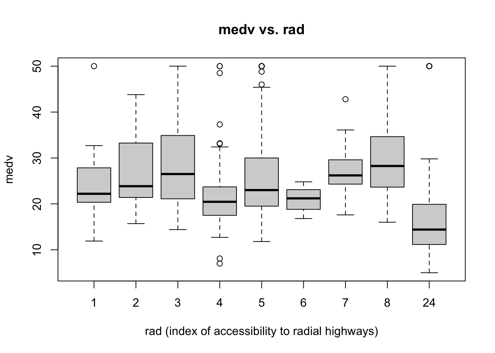

For this case study, I will be using the Boston Housing Data found in the MASS package. The target variable is median value of owner-occupied homes in $1,000 (‘medv’), which is continuous. This is the same data we have been using for the entirety of the Data Mining I and II courses this semester.
Show Code
data(Boston); #this data is in MASS packageattach(Boston)
Exploratory Data Analysis
Data Definitions
crim: per capita crime rate by town
zn: proportion of residential land zoned for lots over 25,000 sq.ft.
Indus: proportion of non-retail business acres per town
chas: Charles River dummy variable
1 if tract bounds river
0 otherwise
nox: nitrogen oxides concentration (parts per 10 million)
rm: average number of rooms per dwelling
age: proportion of owner-occupied units built prior to 1940
dis: weighted mean of distances to five Boston employment centres
rad: index of accessibility to radial highways
tax: full-value property-tax rate per $10,000
ptratio: pupil-teacher ratio by town
black : 1000(Bk - 0.63)^2 where Bk is the proportion of blacks by town
lstat : lower status of the population (percent)
medv(Y): median value of owner-occupied homes in $1,000
crim zn indus chas
Min. : 0.00632 Min. : 0.00 Min. : 0.46 Min. :0.00000
1st Qu.: 0.08205 1st Qu.: 0.00 1st Qu.: 5.19 1st Qu.:0.00000
Median : 0.25651 Median : 0.00 Median : 9.69 Median :0.00000
Mean : 3.61352 Mean : 11.36 Mean :11.14 Mean :0.06917
3rd Qu.: 3.67708 3rd Qu.: 12.50 3rd Qu.:18.10 3rd Qu.:0.00000
Max. :88.97620 Max. :100.00 Max. :27.74 Max. :1.00000
nox rm age dis
Min. :0.3850 Min. :3.561 Min. : 2.90 Min. : 1.130
1st Qu.:0.4490 1st Qu.:5.886 1st Qu.: 45.02 1st Qu.: 2.100
Median :0.5380 Median :6.208 Median : 77.50 Median : 3.207
Mean :0.5547 Mean :6.285 Mean : 68.57 Mean : 3.795
3rd Qu.:0.6240 3rd Qu.:6.623 3rd Qu.: 94.08 3rd Qu.: 5.188
Max. :0.8710 Max. :8.780 Max. :100.00 Max. :12.127
rad tax ptratio black
Min. : 1.000 Min. :187.0 Min. :12.60 Min. : 0.32
1st Qu.: 4.000 1st Qu.:279.0 1st Qu.:17.40 1st Qu.:375.38
Median : 5.000 Median :330.0 Median :19.05 Median :391.44
Mean : 9.549 Mean :408.2 Mean :18.46 Mean :356.67
3rd Qu.:24.000 3rd Qu.:666.0 3rd Qu.:20.20 3rd Qu.:396.23
Max. :24.000 Max. :711.0 Max. :22.00 Max. :396.90
lstat medv
Min. : 1.73 Min. : 5.00
1st Qu.: 6.95 1st Qu.:17.02
Median :11.36 Median :21.20
Mean :12.65 Mean :22.53
3rd Qu.:16.95 3rd Qu.:25.00
Max. :37.97 Max. :50.00
After looking at the data structure and summary statistics, I conclude that all feature variables are continuous with the exceptions of ‘chas’ and ‘rad’. The ‘chas’ variable is a binary categorical variable and ‘rad’ is a multi-level categorical variable. However, dummy encoding is not required as the data for these variables are in integer form.
# Histogramhist(Boston$medv, main ="Distribution of Median Home Values (medv)", xlab ="medv")
From the histogram above, we can see the data roughly follows a normal distribution, with a positive skew. The most common ‘bin’ of median home value is $200,000 to $250,000.
Boxplots of ‘medv’ vs. Categorical Variables
‘chas’
Show Code
# Boxplot of 'medv' vs. 'chas'boxplot(medv ~ chas, data = Boston, main ="medv vs. chas", xlab ="chas (z = tract bounds river, 0 = otherwise)")
‘rad’
Show Code
# Boxplot of 'medv' vs. 'chas'boxplot(medv ~as.factor(rad), data = Boston, main ="medv vs. rad", xlab ="rad (index of accessibility to radial highways)")

Scatterplots of ‘medv’ vs. Continuous Variables
Show Code
# Identify continuous variablescontinuous_vars <-c("crim", "zn", "indus", "nox", "rm", "age", "dis", "tax", "ptratio", "black", "lstat")# Create scatterplots for continuous variablespar(mfrow =c(4,3))for (var in continuous_vars) {plot(Boston[[var]], Boston$medv, xlab = var, ylab ="medv", main =paste("medv vs.", var))}
Above, there are some relationships that appear strong. Particularly, the ‘rm’ and ‘lstat’ variables seem to have somewhat linear relationships with the ‘medv’ variable. Here, ‘rm’ has a positive relationship and ‘lstat’ has a negative relationship with the target variable.
Data Preparation
Training and Testing Data Split
Below I will perform a 80%/20% training and testing data split using my UC M# (12470675) as the seed for reproducibility.
Show Code
set.seed(12470675)sample_index <-sample(nrow(Boston),nrow(Boston)*0.80)Boston_train <- Boston[sample_index,]Boston_test <- Boston[-sample_index,]n <-dim(Boston_train)[1] # sample sizep <-dim(Boston)[2]-1# number of predictors excluding column of ones
Model Creation and Evaluation
1. Linear Model
Full Linear Model
Model Creation
Show Code
# Full ModelBoston.full.lm <-lm(medv ~ ., data = Boston_train)summary(Boston.full.lm)
# in-sample fit (prediction), full data available #ASE_full_linear <-mean(Boston.full.lm$residuals^2)# out-of-sample fit (prediction) MSPE for full LM model #pred_full_linear_test <-predict(Boston.full.lm, Boston_test)MSPE_full_linear <-mean((Boston_test$medv - pred_full_linear_test)^2)
# in-sample fit (prediction)ASE_step_AIC <-mean(model_step_aic$residuals^2)# out-of-sample fit (prediction) MSPE for full LM model #pred_step_AIC <-predict(model_step_aic, Boston_test)MSPE_step_AIC <-mean((Boston_test$medv - pred_step_AIC)^2)
Stepwise Variable Selection with AIC Model Results:
ASE: 22.0011133
MSPE: 22.7308494
2. Regression Tree
Original Regression Tree
Model Creation
Show Code
boston_rpart <-rpart(formula = medv ~ ., data = Boston_train)boston_rpart
train.norm <- Boston_traintest.norm <- Boston_test## normalize numerical predictors to 0-1 scale## for testing and training dataset ## range [0,1]-standardization ##cols <-colnames(train.norm[, -14]) #scaling only on p=13 predictors Xfor (j in cols) { train.norm[[j]] <- (train.norm[[j]] -min(Boston_train[[j]])) / (max(Boston_train[[j]]) -min(Boston_train[[j]])) test.norm[[j]] <- (test.norm[[j]] -min(Boston_train[[j]])) / (max(Boston_train[[j]]) -min(Boston_train[[j]]))}
Select the Best k
Show Code
set.seed(12470675)sample_index2 <-sample(nrow(Boston_train),nrow(Boston_train)*0.80)train2.norm <- train.norm[sample_index2,]valid.norm <- train.norm[-sample_index2,]# initialize a data frame with two columns: k and accuracyRMSE.df <-data.frame(k =seq(1, 30, 1), RMSE.k =rep(0, 30))# compute knn for different k on validation setfor (i in1:30) { knn.reg.pred <-knn.reg(train = train2.norm[, c(1:13)], test = valid.norm[, c(1:13)], y = train2.norm$medv, k = i) RMSE.df[i, 2] <-sqrt(sum((valid.norm$medv-knn.reg.pred$pred)^2)/length(valid.norm$medv))}RMSE.df
# prediction on training sampleBoston_rf_pred_train <-predict(Boston_rf, Boston_train)# in-sample ASEASE_random_forest <-mean((Boston_train$medv-Boston_rf_pred_train)^2) # plot out of bag (OOB) errors for each ntree value from 1 to 500plot(Boston_rf$mse, type='l', col=2, lwd=2, xlab ="ntree", ylab ="OOB Error")
Show Code
# prediction on testing sampleBoston_rf_pred_test <-predict(Boston_rf, Boston_test)# out-of-sample MSPEMSPE_random_forest <-mean((Boston_test$medv-Boston_rf_pred_test)^2)
Random Forest Model Results:
ASE: 2.0348652
MSPE: 9.7253342
Show Code
# make dataframe from importance() outputfeat_imp_df <-importance(Boston_rf) %>%data.frame() %>%mutate(feature =row.names(.)) feat_imp_df
X.IncMSE IncNodePurity feature
crim 12.860544 2016.1703 crim
zn 3.600826 282.7530 zn
indus 11.945734 1833.4535 indus
chas 3.254583 226.8842 chas
nox 14.747549 1938.0660 nox
rm 33.558932 9695.3299 rm
age 9.884350 870.5076 age
dis 16.850483 2175.4557 dis
rad 6.271453 275.9496 rad
tax 12.798919 1347.8094 tax
ptratio 15.568195 2010.3849 ptratio
black 8.149253 630.6317 black
lstat 30.419021 10689.2994 lstat
#refit gam on Boston training (nonlinear to linear)Boston_gam_re <-gam(medv ~s(crim)+zn+s(indus)+chas+s(nox)+s(rm)+age+s(dis)+rad+s(tax)+ptratio+s(black)+s(lstat),data=Boston_train)summary(Boston_gam_re)
Refit GAM Model and Remove Insignificant Variables
Show Code
#refit gam on Boston training (remove nonsignificant variables)Boston_gam_final <-gam(medv ~s(crim)+s(indus)+s(nox)+s(rm)+s(dis)+rad+s(tax)+ptratio+s(lstat),data=Boston_train)summary(Boston_gam_final)
## initialize scaling training, testing, and new data frames to originals ##train.norm <- Boston_traintest.norm <- Boston_test## normalize all numerical variables (X&Y) to 0-1 scale, range [0,1]-standardization ##cols <-colnames(train.norm[, ]) #scaling both X and Yfor (j in cols) { train.norm[[j]] <- (train.norm[[j]] -min(Boston_train[[j]])) / (max(Boston_train[[j]]) -min(Boston_train[[j]])) test.norm[[j]] <- (test.norm[[j]] -min(Boston_train[[j]])) / (max(Boston_train[[j]]) -min(Boston_train[[j]]))}
Model Creation
Show Code
#### Neural networks on (scaled) Training data and plot ####set.seed(12470675)f <-as.formula("medv ~ .")Boston_nn_scaled <-neuralnet(f,data=train.norm, hidden=c(5,3), linear.output=T)plot(Boston_nn_scaled)
Model Evaluation
Show Code
# in-sample predictionpr_nn_scaled_train <-compute(Boston_nn_scaled, train.norm[,1:p])# recover predicted value back to the original response scale pr_nn_org <- pr_nn_scaled_train$net.result*(max(Boston_train$medv)-min(Boston_train$medv))+min(Boston_train$medv)train_r <- (train.norm$medv)*(max(Boston_train$medv)-min(Boston_train$medv))+min(Boston_train$medv)# in-sample ASEASE_nn.norm <-mean((train_r - pr_nn_org)^2) # out-of-sample predictionpr_nn_scaled_test <-compute(Boston_nn_scaled, test.norm[,1:p])# recover predicted value back to the original response scale pr_nn_org_t <- pr_nn_scaled_test$net.result*(max(Boston_train$medv)-min(Boston_train$medv))+min(Boston_train$medv)test_r <- (test.norm$medv)*(max(Boston_train$medv)-min(Boston_train$medv))+min(Boston_train$medv)# out-of-sample MSPEMSPE_nn.norm <-mean((test_r - pr_nn_org_t)^2)
Neural Network Model Results:
ASE: 4.608239
MSPE: 11.9294593
Summary of Model Results
Show Code
# create list of models createdmodels <-c("Full Linear Regression", "Stepwise Variable Selection LM with AIC","Original Regression Tree", "Pruned Regression Tree","k-NN with optimal k (scaled X)","Random Forests","Boosting","Original Generalized Additive Model (GAM)","Adjusted Generalized Additive Model (GAM)","Final Generalized Additive Model (GAM)","Neural Networks (scaled X&Y)")ASE_values <-c(ASE_full_linear, ASE_step_AIC, ASE_regression_tree, ASE_regression_tree_prune, ASE_knn_best_k, ASE_random_forest, ASE_boosting, ASE_gam.orig, ASE_gam.re, ASE_gam.final, ASE_nn.norm)MSPE_values <-c(MSPE_full_linear, MSPE_step_AIC, MSPE_regression_tree, MSPE_regression_tree_prune, MSPE_knn_best_k, MSPE_random_forest, MSPE_boosting, MSPE_gam.orig, MSPE_gam.re, MSPE_gam.final, MSPE_nn.norm)# create dataframemodel_results <-data.frame(Method = models, ASE = ASE_values, MSPE = MSPE_values)kable(model_results)
Method
ASE
MSPE
Full Linear Regression
21.913645
23.472129
Stepwise Variable Selection LM with AIC
22.001113
22.730849
Original Regression Tree
16.764289
21.838535
Pruned Regression Tree
14.511251
19.513446
k-NN with optimal k (scaled X)
9.469340
14.468900
Random Forests
2.034865
9.725334
Boosting
7.052546
14.290070
Original Generalized Additive Model (GAM)
7.492745
17.071295
Adjusted Generalized Additive Model (GAM)
7.515273
17.089468
Final Generalized Additive Model (GAM)
7.754254
16.215264
Neural Networks (scaled X&Y)
4.608239
11.929459
From the evaluation metrics summarized above, it is clear that the Random Forests model performs the best. The ASE and MSPE for this model are significantly lower than those for all of the other models. The Neural Networks model also performs well. Conversely, the Full Linear Regression model performs the worst. However, I do believe that it likely makes the most sense to use the linear regression model for this data and the potential uses of the analysis.
Finally, based on feature importance from the Random Forest model, as well as the regression coefficients from the Stepwise Variable Selection Linear Regression Model with AIC, I conclude that the most influential features are ‘rm’, ‘lstat’, and ‘dis’.